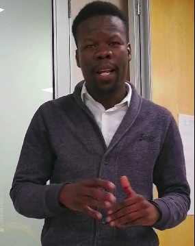

I am Ngwako Gift Moshobane, born on 17 October 1989 in Tzaneen(Limpopo province).In 2009 i completed my matric where i was one of the top students at Mphiri O Tee secondary school.In 2010 i started my BSc Mathematics and Statistics at University of Johannesburg and later dropped out due to financial contraints,however i recovered quickly from difficulties or toughness by registering the same degree at University of South Africa which i completed record time in 2016.In 2017 i joined Gauteng department of infrastructure development as business data analyst intern and resigned in 2019 August 31 where i joined Standard bank group as Mobile and Web developer trainee.
